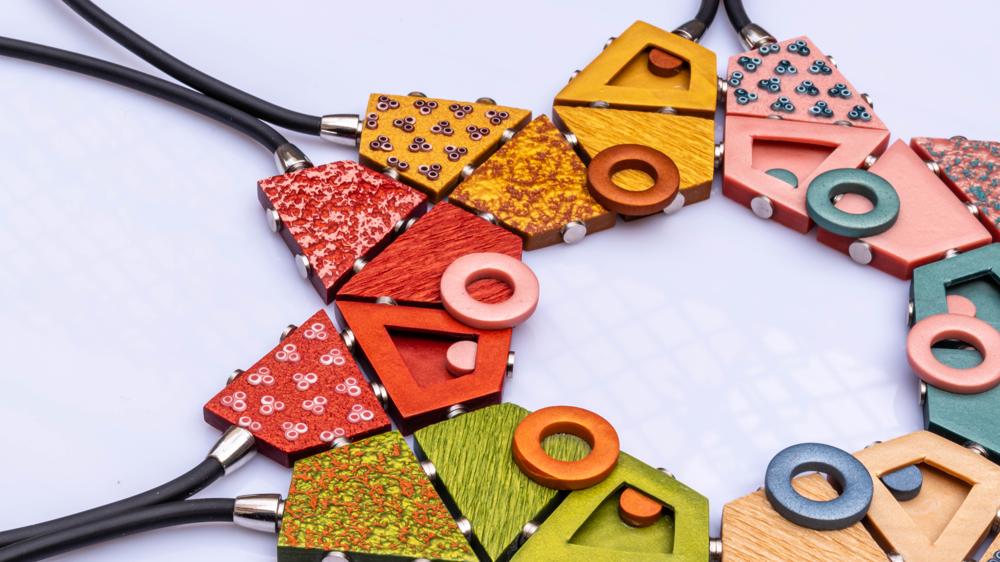
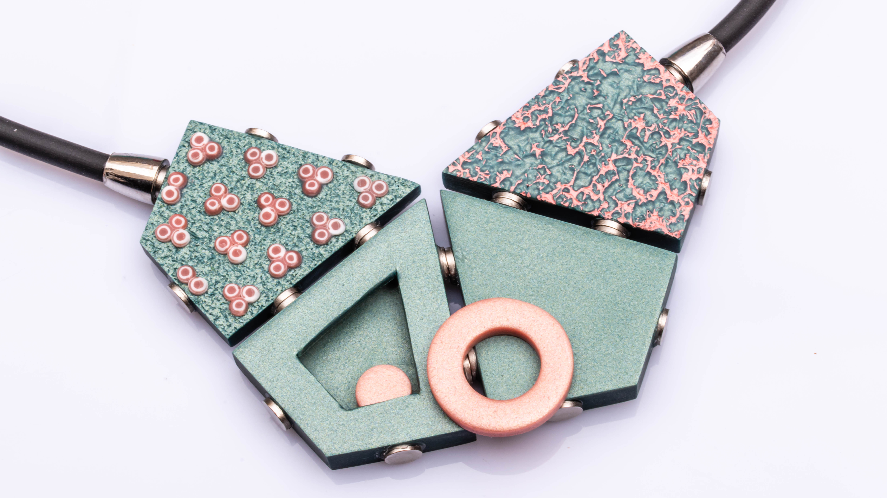
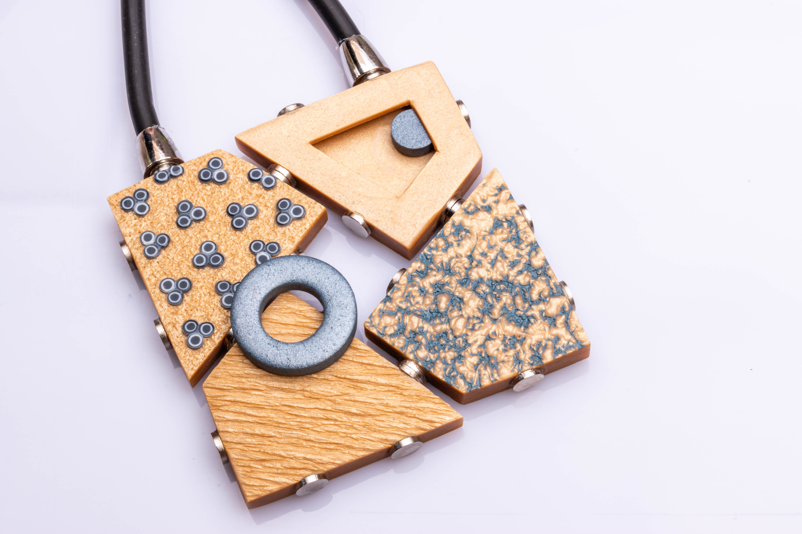
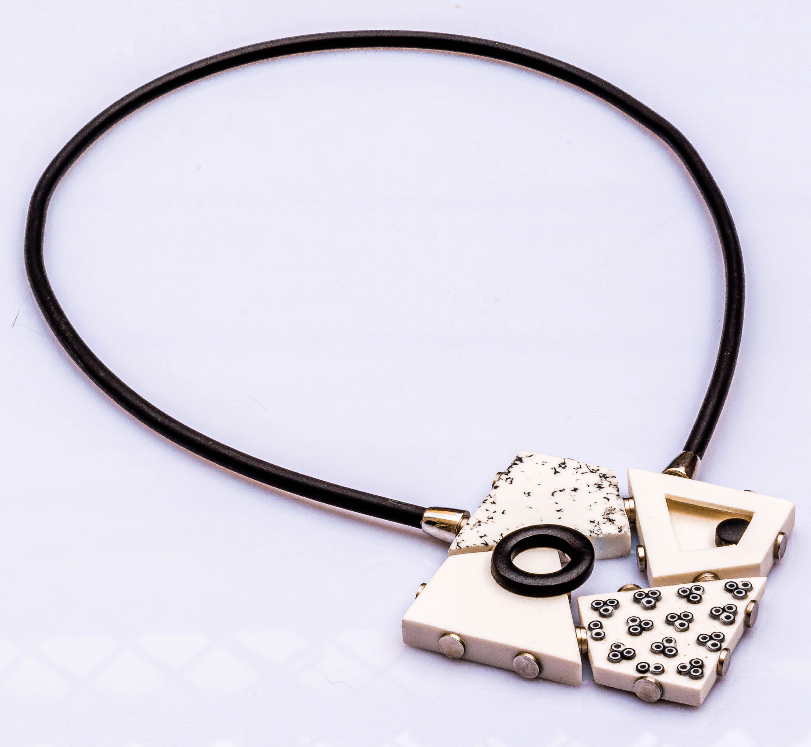
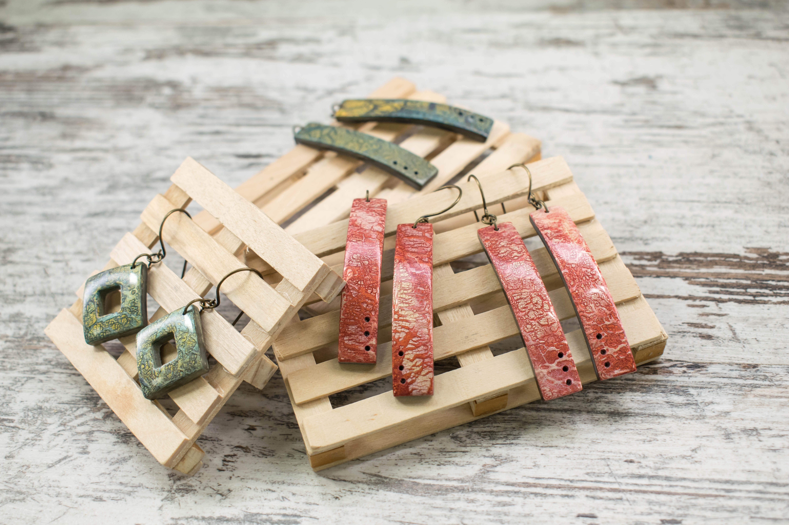

Todos los niveles son bienvenidos
Plug&Play es un taller que surge de la necesidad y de las obsesiones:
De la necesidad de sobrevivir al confinamiento durante la pandemia del COVID19 y de la obsesión por ordenar mi taller durante esos meses.
Estanterías modulares, texturas y las ganas de explorar luna paleta de color saturada y vibrante fueron los puntos de partida esta pieza.

En este taller nos lanzaremos de cabeza a la exploración de diferentes texturas que usaremos para crear cuatro piezas de carácter geométrico y minimalista.
El montaje de esta pieza nos va a permitir cambiar la posición de cada uno de los elementos para crear un nuevo collar cada vez que queramos.

Los temas principales que trabajaremos en este taller serán:
La duración de este taller es de 7 horas aproximadamente.

